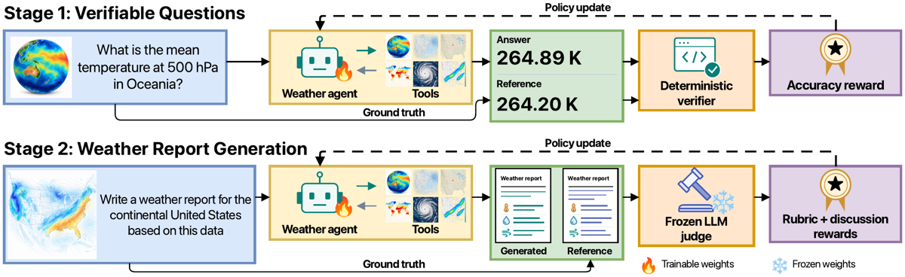
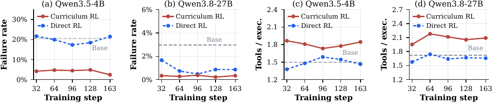
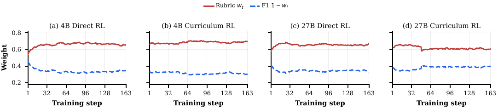

RL agentique multi-tour sur une tâche de rédaction experte longue sans vérifieur exact : le reward combine une rubrique météo à 6 critères et un Discussion F1 d'entailment bidirectionnel au niveau claim, tous deux jugés par LLM contre un rapport de référence NWS, le tout gaté par un flag de grounding déterministe maintenu par le serveur d'exécution ; un curriculum « questions vérifiables d'abord, rapport ouvert ensuite » initialise la politique.
Claim principal, formulé précisément : sur 197 événements de test, le RL sur ce reward jugé-par-LLM fait monter la moyenne des six scores juge×métrique de +26 % (4B, 0,347→0,438) et +13 % (27B, 0,506→0,571) par rapport à la base, les gains persistant sous deux juges indépendants du juge d'entraînement ; le curriculum ajoute 3 à 4 points de gain relatif par-dessus un RL direct à budget de steps de report apparié [Tab. 2].
⚠️ Le papier est, dans ce corpus, le gabarit structurellement le plus proche d'un environnement juridique : rapport expert long, références humaines faisant autorité, pas de vérifieur exact, audit par experts du domaine, curriculum vérifiable→ouvert. Mais la référence météo est datée, unique et faisant autorité — c'est précisément ce qui n'existe pas en droit (cf. §9).
Origine. Deux tâches, deux sources, toutes deux ZephyrusBench [Varambally et al. 2026] : - Stage 1 (vérifiable) : 8 templates de questions d'analyse météo à réponse machine-vérifiable — statistiques régionales, extrema géographiques et temporels, détection d'anomalies climatologiques (unilatérale, standardisée, enveloppe de percentiles) [Tab. B.1]. Gold answers issues des métadonnées du benchmark. Pool de 710 questions, 704 en RL, 125 disjointes en validation [§4.1, App. B.3]. - Stage 2 (ouvert) : champs ERA5/WeatherBench 2 appariés aux forecast discussions opérationnelles du NWS émises aux mêmes dates. 2 608 événements d'entraînement (1995-2018), 197 de test (2019-2020) [§4.1].
Pipeline. Champs WeatherBench 2 1959-2023, pas de 6 h, grille 1° équiangulaire ; pression et température de surface, vents, précipitations, champs terre/océan, et géopotentiel / humidité / température / vents / vitesse verticale en niveaux de pression [App. A]. Prétraitement des références par un prompt fixe : retrait des notes d'auteur, références aux cartes et aux modèles, disclaimers. Longueurs moyennes ~1 800 caractères (train) et ~2 000 (test) [App. A].
Contamination et séparation train/test. C'est la partie la mieux traitée du papier. Splits temporellement disjoints ; vérifications explicites : « No test reference matches a training reference or shares its first 200 characters, and the test set contains no duplicate references » ; l'année est omise du prompt, donc un événement daté n'identifie pas un épisode historique unique ; et la rubrique est construite uniquement depuis le split d'entraînement, les sorties de checkpoints n'étant jamais utilisées [App. A, App. C.4]. Le checkpoint rapporté est le terminal step 163, donc aucun résultat de test ne sélectionne de checkpoint ni d'hyperparamètre [§4.1].
Filtrage / pass@k. Pas de filtrage par difficulté sur les événements de report. En Stage 1, rejection-sampling fine-tuning (RSFT) : 8 rollouts par question à température 0,8, conservation des trajectoires à crédit plein avec accès à l'outil requis, sans échec d'infrastructure, JSON valide et aucun tour sans balise — cap de 2 par question, préférence pour moins d'erreurs d'exécution, moins de tours, moins de tokens [App. B.1, Tab. C.1]. Rendement brut : 1 801 rollouts à crédit plein avec accès outil pour le 4B (31,7 %) contre 3 125 (55,0 %) pour le 27B [App. B.1].
Curriculum. Stage 1 (44 steps de RL) → Stage 2 (163 steps). Les checkpoints d'initialisation de Stage 2 sont RL-only step 44 pour le 4B et RSFT-RL step 24 pour le 27B [§4.1].
Données SFT/IFT avant RL. RSFT seulement, et seulement comme bras alternatif de Stage 1 (LoRA 64, 3 époques, LR 1e-5, batch 4) [App. B.1]. Aucun SFT sur la tâche de report.
Coût humain, en heures et en qui. Trois météorologues professionnels annotent 100 paires claim-rapport [§3.3, App. D.3]. Le nombre d'heures n'est pas précisé, ni la rémunération, ni le protocole de recrutement. Quatre co-auteurs portent des titres opérationnels météo — leur temps n'est pas comptabilisé. La construction de la rubrique est faite par GPT-5.2, avec une « review » humaine mentionnée mais non quantifiée (« we... review each criterion, and freeze it ») [App. C.4]. ⚠️ C'est le seul coût humain du pipeline, et il est remarquablement faible — parce que la référence experte est gratuite : les discussions NWS sont écrites par des prévisionnistes opérationnels et fournissent « expert-quality targets without manual annotation » [§4.1]. C'est le point de bascule du transfert juridique (§9).
Observation. Multimodale. Sorties texte de l'exécution Python (cap 5 000 caractères par tour), plus un résumé d'évidence calculé par le serveur appendu à chaque tour (cap 2 600 caractères), plus les images quand l'agent trace des figures — 2 images par tour, 8 par épisode, redimensionnées à 768 px sur le grand côté [Tab. C.1]. Le prompt expose les indices temporels relatifs et nomme mois, jour et jour de la semaine de la fenêtre d'analyse et des cinq jours suivants, « parce que les discussions opérationnelles désignent les jours par leur nom » [App. A].
Espace d'actions. Un seul format, strict : à chaque tour, exactement une balise — <execute> (code Python) ou <solution> (rapport final). « A response containing both tags is rejected without executing the code or ending the episode. A response containing neither tag receives a corrective observation » [App. C.3]. C'est du code arbitraire, pas des signatures d'outils JSON.
Toolset (hérité de Zephyrus, augmenté ici) [§3.1] :
- requête des champs atmosphériques WeatherBench 2 ;
- geolocator → masques géographiques de régions nommées ;
- climatologie historique (calcul d'anomalies) ;
- forecaster retournant les champs à un lead time demandé — ⚠️ c'est un forecaster « oracle » qui renvoie le champ de réanalyse ERA5 futur réel, pas la sortie d'un modèle NWP. Les auteurs le justifient (isoler la capacité d'analyse des erreurs du modèle numérique) et l'admettent en Limitations ;
- ajouts de ce papier : un outil de plotting (les figures reviennent comme observations images) et TempestExtremes [Ullrich 2017] pour détecter et suivre cyclones tropicaux et extratropicaux.
Multi-turn, horizon. Au plus 13 tours, dont 12 de travail et un 13ᵉ tour final forcé [Tab. C.1, App. C.3]. Un rollout = une seule séquence contenant tout l'historique d'interaction [§3.5] — donc pas de compaction, pas d'arbre, pas de rupture du ratio d'importance. C'est propre et c'est à relever : le papier évite par construction le piège « la compaction transforme la trajectoire en arbre ».
Gestion du contexte long. Par budgets durs, pas par résumé : budget de prompt 38 000 tokens, budget d'épisode 46 000 tokens, cap de génération 10 000 tokens par action ; le dépassement d'un budget force le tour final [Tab. C.1]. Le contrôle se fait donc en amont (caps d'observation) plutôt qu'en aval.
Exécution, déterminisme, reset. L'état de grounding est « maintained by the execution server and reset at the start of every episode » [App. C.3]. ⚠️ Le serveur met à jour ses conditions depuis les métadonnées d'exécution, pas depuis le code du modèle, son texte imprimé, ni l'usage d'une balise <execute> — c'est exactement le contrôle que le corpus réclame (« les appels d'outils émis sont-ils parsés et exécutés ? »). « Tool access requires a server-recorded successful return. Evidence delivery requires a server-generated finding that is actually included in the observation after output truncation. » Le contrôle est donc fait après troncature, ce qui ferme le trou « l'évidence a été produite mais jamais vue par le modèle ». Timeouts : non précisés.
Erreurs d'outils et sorties mal formées. L'environnement renvoie les sorties et les erreurs d'exécution, l'agent peut réparer son code dans la limite des tours et des budgets ; « Failed executions carry no retry penalty » [App. C.1]. Une <solution> prématurée (grounding non satisfait) est rejetée, consomme le tour, et reçoit un message demandant l'évidence manquante ; l'épisode continue [App. C.3]. Messages d'environnement reproduits intégralement en App. F.1, y compris le no-report sentinel (« Unable to provide a more detailed answer from the available analysis »).
Épisodes sans verdict. Traités explicitement, et dans les deux sens : « An unambiguous infrastructure or judge failure excludes its four-rollout prompt group from the update. Code errors and grounding failures caused by the policy are retained as training outcomes » [App. C.5]. ⚠️ C'est la bonne discipline : les pannes d'infra sortent du groupe, les échecs imputables à la politique restent scorés. À noter aussi que les groupes à échec de grounding sont exclus de l'estimation de la variance qui pilote le poids $w_t$, « so that fixed penalties and missing scores do not distort the estimated quality spread » [App. C.1].
Tokens entraînés = tokens émis ? Oui, explicitement : « Observations, evidence summaries, and forced-turn messages are environment tokens and are excluded from the loss », et $\mathcal{I}_k$ n'indexe que les tokens générés par la politique [§3.5, App. C.5].
Exemple de trajectoire. App. B.4 (Stage 1) et App. C.3 (report stage) en donnent des représentatives. Le prompt système complet (abrégé) est en App. F.1, avec le « TOOL-EVIDENCE CONTRACT » et un style imposé : 250-350 mots, 3 à 5 paragraphes de prose continue, pas de titres ni de listes.
C'est le cœur du papier et le point de la mission de vérification (a).
| Composante | Nature | Qui la calcule | Poids dans le reward |
|---|---|---|---|
| Grounding $g(\tau)$ | check déterministe, conjonction de 3 booléens | serveur d'exécution, depuis les métadonnées | gate binaire : si 0 → le reward est $-c$ et les scores de juge ne contribuent pas |
| Rapport utilisable (≥ 40 caractères) | check déterministe | harness | gate binaire, même branche que ci-dessus |
| $p_{\text{fmt}}$ (rapport récupéré d'une réponse finale non balisée) | check déterministe | harness | $-0{,}02$ additif |
| rubric$(y)$ — 6 critères, entiers 1-10, ancres à 1/3/5/8/10 | juge LLM (GPT-OSS-120B, T=0), 1 appel, score + explication par critère | juge | $w_t \in [0{,}2;0{,}8]$, réalisé 0,54-0,71 |
| F1$(y)$ — entailment bidirectionnel de claims | juge LLM, extraction des claims et labellisation, un appel par claim, T=0 | juge | $1-w_t$, réalisé 0,29-0,46 |
| Pénalité de tours $\lambda(T)$ | déterministe (Stage 1 seulement) | harness | $\min(0{,}15;\ 0{,}05\max(0, T-5))$ |
Le Stage 1, lui, est entièrement vérifiable : échelle de crédit gradué (erreur relative ≤ 1 % → 1,0 ; ≤ 5 % → 0,5 ; temps exact → 1,0, à 6 h près → 0,5 ; localisation : nom normalisé égal ou contenant le gold ; listes d'anomalies : set F1 gradué) [Tab. B.2], multipliée par un check d'accès outil compté par le serveur.
Grounding (App. C.3, Éq. 4) :
$$g(\tau)=\mathbf{1}[\text{dataset access}]\cdot\mathbf{1}[\text{forecast access}]\cdot\mathbf{1}[\text{evidence delivered}]$$
Qualité jugée (§3.2, Éq. 1) :
$$\mathcal{Q}_t(y) = w_t\,\mathrm{rubric}(y) + (1-w_t)\,\mathrm{F1}(y)$$
Reward terminal (§3.2, Éq. 2) :
$$\mathcal{R}(\tau) = \begin{cases} -c, & \text{no usable report or } g(\tau)=0,\ \mathcal{Q}t(y) - p}, & \text{otherwise}.\end{cases}$$
avec $c=0{,}05$, $p_{\text{fmt}}=0{,}02$ [§4.1, Tab. C.1].
Pondération en ligne, ré-estimée à chaque step (App. C.1, Éq. 3 et 5) : variance intra-groupe poolée sur les $G_t$ groupes dont les $K=4$ rollouts ont tous passé le grounding,
$$\hat\sigma^2_{m,t} = \frac{1}{G_t(K-1)}\sum_{j=1}^{G_t}\sum_{k=1}^{K}\big(s_{m,jk}-\bar s_{m,j}\big)^2,\qquad v_{m,t}=\beta v_{m,t-1}+(1-\beta)\hat\sigma^2_{m,t}$$
$$w_t=\operatorname{clip}{[w,\,1-w_{\min}]}!\left(\frac{\tilde\sigma_{\mathrm{f},t}}{\tilde\sigma_{\mathrm{r},t}+\tilde\sigma_{\mathrm{f},t}}\right)$$
$\beta=0{,}9$, $w_{\min}=0{,}2$, mise à jour seulement si $G_t\geq 8$ sinon rétention du poids précédent. Règle inverse-spread : la composante la moins variable reçoit le plus gros coefficient. Avant clipping, $w_t\tilde\sigma_{\mathrm{r},t}=(1-w_t)\tilde\sigma_{\mathrm{f},t}$.
Discussion F1 (§3.2) :
$$P(y)=\frac{S_y}{S_y+F_y},\qquad \mathrm{Rec}(y)=\frac{S_{y^{}}}{N_{y^{}}},\qquad \mathrm{F1}=\text{moyenne harmonique}$$
Il y a une clause d'échec, mais elle ne porte que sur le processus, pas sur le fond. La conjonction $g(\tau)$ et le seuil des 40 caractères annulent intégralement la contribution des juges : « If $g(\tau)=0$ at the final turn, the rollout receives a fixed penalty, and the judge scores do not contribute to the training reward » [§3.2]. Pour un rapport non grounded, les scores de juge sont « recorded only for monitoring » [App. C.3]. C'est une vraie clause éliminatoire, et elle est vérifiable côté serveur, pas déclarative.
Sur le contenu, en revanche, c'est une pure somme pondérée positive. Aucun critère de rubrique ne peut annuler le score : la rubrique est la moyenne des six scores entiers, renormalisée $(\text{moyenne}-1)/9$, et « a missing criterion receives the minimum score » [App. C.4] — c'est-à-dire 1/10, pas 0. Un critère catastrophique plafonne sa perte à $1/6$ de la composante rubrique, donc à $\frac{9}{9\cdot 6}\cdot w_t \approx 0{,}10$ du reward. Il n'existe ni conjonction, ni seuil, ni multiplicateur sur le fond.
⚠️ Nuance importante, et elle joue en faveur du papier : le canal d'omission existe, et il est asymétrique par construction. Rec a pour dénominateur tous les claims de référence $N_{y^}$, alors que P a pour dénominateur seulement les claims générés SUPPORTED ou REFUTED — « NEUTRAL generated claims are excluded from the precision denominator », et « a reference claim that the report neither states nor contradicts counts as a recall miss » [App. C.2]. Et le critère 1 de la rubrique est littéralement intitulé « Setup Fidelity & Key Feature Retention (Additions AND Omissions) », avec « without dropping any primary stated feature/hazard that changes the forecast story »* [Tab. C.2]. Le papier voit donc l'omission, contrairement à l'écrasante majorité des papiers de rubrique du corpus.
⚠️ Arithmétique à moi, pas au papier (base rates de Tab. D.2 pour GPT-OSS : 11,7 claims/rapport, Supp. 0,15 ; 12,8 claims de référence, Cov. 0,20) : une omission supplémentaire coûte $\partial\mathrm{Rec}=1/12{,}8\approx0{,}078$, soit $\Delta\mathrm{F1}\approx0{,}09$ à $P\approx0{,}5$ ; un claim réfuté supplémentaire coûte $\Delta\mathrm{F1}\approx0{,}015$. À ces base rates, l'omission coûte environ 6× l'erreur dans F1 — l'inverse de ce qu'on redoute. Mais : (i) le gain est dilué par $(1-w_t)\approx 0{,}35$, soit ~0,031 de reward contre ~0,005 ; (ii) tous les claims pèsent pareil — l'unique point dispositif compte autant qu'une remarque de température ; (iii) la règle inverse-spread déplace activement le poids loin de F1 parce que F1 a plus de variance intra-groupe (« Discussion F1 has greater within-group variation and therefore receives less weight throughout each run », [App. C.1, Fig. C.1]) — le mécanisme de pondération érode donc précisément le canal qui porte l'information d'omission.
Et le papier démontre lui-même la limite, dans sa propre figure qualitative : le rapport 27B Curriculum terminal décrit le Sud-Est comme « stable and largely dry » alors que la référence annonce pluie et menace orageuse sévère — les auteurs qualifient cela de « consequential regional error » — et un seul claim sur quinze est labellisé REFUTED par GPT-OSS ; pire, le claim de synthèse S4 répète l'erreur et est labellisé SUPPORTED (Mistral, lui, la réfute) [§4.3, Fig. 4]. Une erreur régionale décisive déplace le reward de quelques centièmes. Preuve par l'exemple, fournie par les auteurs, que l'agrégation ne peut pas rendre une faute décisive dominante.
Pipeline reproductible et honnête [App. C.4] : 100 références positives (paraphrases fidèles par GPT-5.2) contre 100 négatives (retrait de claims météo, ajout de claims d'une référence non liée, ou les deux ; corruptions légère / moyenne / lourde = 1, 2-3, 4-6 claims altérés), les négatives étant re-paraphrasées comme les positives pour effacer les indices stylistiques. Raffinement itératif par GPT-5.2 sur un sous-ensemble fixe de 16+16, arrêt quand l'AUC ROC ≥ 0,9 et le gain tour-à-tour < 0,05, maximum 4 tours ; rubrique retenue au tour 3, évaluée une seule fois sur 25+25 tenus à l'écart, puis gelée avant l'entraînement. Les six critères sont recopiés intégralement en Tab. C.2 et les ancres complètes en Fig. C.2. ⚠️ Mais : la rubrique est validée comme discriminateur positif/négatif (AUC ≥ 0,9 contre des corruptions synthétiques), jamais comme prédicteur de préférence experte sur des rapports réels — les auteurs l'admettent (« evaluating expert preference over complete reports is an important next step »).
Non. Voir §3.3 du mémo et la réponse (b) en §7.4. L'audit rapporte accuracy exacte, Cohen's $\kappa$, et « Within-1 » (= fraction de claims sur lesquels les deux jugements ne sont pas opposés), sur 100 claims [Tab. 1]. Aucune matrice de confusion, aucun FPR/FNR par label, aucun dénominateur distinct. ⚠️ Et « Within-1 » est quasi vide d'information ici : il ne compte comme désaccord que les flips SUPPORTED↔REFUTED, or GPT-OSS ne labellise SUPPORTED que 15 % des claims de rapport [Tab. D.2] — les flips francs sont rares par construction des base rates, donc Within-1 > 0,9 partout est attendu. La confusion qui compte en droit — NEUTRAL labellisé SUPPORTED, c'est-à-dire un claim non étayé crédité — est exactement celle que Within-1 efface.
Non, jamais. Aucun test contre des solutions dégénérées, des mutants, ou une politique apprenant à exploiter le juge. Aucune section failure modes / reward hacking (cf. §5). Les seules défenses sont structurelles et a priori : rubrique gelée, trois juges, gate de grounding, style imposé 250-350 mots. ⚠️ Deux surfaces d'attaque restent ouvertes et identifiables dans les formules : 1. Les claims NEUTRAL sont gratuits en précision (exclus du dénominateur) mais peuvent accrocher du rappel. Une politique qui multiplie les claims couvrants et prudents gagne du rappel sans payer de précision. Le seul frein mécanique est la contrainte de longueur — mais elle est dans le prompt, pas dans le reward : aucun check de longueur haute n'apparaît dans Tab. C.1 (seul un plancher de 40 caractères existe). 2. Le juge extrait ET labellise les claims : « Each judge determines both the claims and their labels, so these choices change the F1 numerator and denominator together » [App. D.2]. Le numérateur et le dénominateur ne sont pas indépendants de la politique de scoring.
Le juge voit-il la trajectoire ou seulement le livrable ? Seulement le livrable : le prompt du juge rubrique contient rubrique + question + référence + réponse [App. F.2], et le prompt d'évaluation de claim ne contient que claim + evidence [App. F.3]. La trajectoire n'est vue que par le gate déterministe. ⚠️ Séparation nette process/outcome — c'est une position de design, et elle est la bonne pour le juridique.
Algorithme. GRPO [Shao et al. 2024] avec l'objectif CISPO [MiniMax-M1], perte sequence-mean (§3.5, Éq. 6) :
$$\mathcal{L}(\theta)=-\frac{1}{K}\sum_{k=1}^{K} A_k\,\frac{1}{|\mathcal{I}k|}\sumk}\operatorname{sg}!\big[\operatorname{clip}(\rho,1-\epsilon_{\mathrm{low}},1+\epsilon_{\mathrm{high}})\big]\,\log\pi_\theta(a_{k,i}\mid s_{k,i})$$
Ce qui diffère du standard : (i) avantages centrés par groupe sans normalisation par l'écart-type, $A_k=r_k-K^{-1}\sum_j r_j$ ; (ii) intervalle de clipping asymétrique et très large, $\epsilon_{\text{low}}/\epsilon_{\text{high}} = 1{,}0/4{,}0$, soit un ratio clippé dans $[0,5]$ ; (iii) gradient stoppé à travers le ratio clippé (CISPO) ; (iv) tokens d'environnement exclus de $\mathcal{I}_k$.
Hyperparamètres complets [Tab. C.1, §4.1] :
| Valeur | |
|---|---|
| Rollouts par prompt ($K$) | 4 |
| Prompts par step | 16 (⇒ 64 rollouts / step d'optimiseur) |
| Température / top-$p$ | 0,6 / 1,0 (entraînement et éval) |
| Coefficient KL | 0 (aucun terme de politique de référence) |
| LoRA rank / alpha | 64 / 64, couches linéaires du langage, vision tower gelée |
| LR Stage 1 | 1e-5 |
| LR report RL | 1e-5 (4B), 3e-5 (27B) |
| Tours max | 13 (le 13ᵉ est le tour final forcé) |
| Steps Stage 1 | 44 (704 questions du pool de 710) |
| Steps report RL | 163 = une époque sur 2 608 événements ⇒ 10 432 rollouts |
| Cadence d'éval | tous les 32 steps, plus step 163 |
| $c$ / $p_{\text{fmt}}$ / plancher rapport | 0,05 / 0,02 / 40 caractères |
| $w$ bornes / $\beta$ / groupes min | [0,2 ; 0,8] / 0,9 / 8 |
⚠️ $K=4$ est très petit pour un advantage group-relative sur un reward de juge continu, et la variance intra-groupe estimée sur $K-1=3$ degrés de liberté par groupe pilote la pondération du reward. Le lissage $\beta=0{,}9$ et le plancher $G_t\geq 8$ sont là pour ça, mais l'estimateur reste bruité, et l'EMA introduit une dépendance du reward à l'histoire du run — le reward n'est pas stationnaire d'un run à l'autre (« The realized weights depend on the rollout scores in each run », App. C.1).
Stabilité : ce qui a cassé. Rien n'est rapporté. Aucun récit d'instabilité, d'effondrement d'entropie, de divergence. Les mécanismes défensifs sont présents (exclusion des groupes en panne, bornes sur $w$, rétention du poids si $G_t<8$, pas de pénalité de retry) mais présentés comme du design, pas comme des réparations. ⚠️ Avec KL = 0, LoRA seul, 163 steps et une époque unique, un effondrement est peu probable — le régime est court et contraint. C'est crédible.
Compute. Deux H200 par run d'entraînement [App. C.5]. Pour le 4B : inférence de rollout et optimisation de la politique sur deux devices séparés. Pour le 27B : moteur d'inférence en tensor-parallel 2-way et deux rangs de politique partageant les deux devices. Inférence et éval autonomes sur A100. Les remerciements mentionnent des crédits de compute Tinker (Thinking Machines Lab). Durée en heures : non précisée. Coût en appels de juge : non précisé (mais calculable à la louche — 10 432 rollouts × (1 appel rubrique + ~24 appels de claim) par run).
Dynamique. Pas de courbes de reward, de longueur ni d'entropie. Les seules dynamiques publiées sont : les poids $w_t$ réalisés [Fig. C.1], les diagnostics d'outil [Fig. 3], et les trajectoires de score par checkpoint [Fig. D.1]. ⚠️ Absence notable : aucune courbe de reward d'entraînement, donc aucun moyen de voir un décrochage reward↗ / métriques indépendantes↘.
⚠️ Le papier n'a pas de section failure modes ni reward hacking. Le reward hacking n'apparaît que dans les travaux connexes, comme risque documenté ailleurs (« reward hacking and tool-use collapse have been reported under weak supervision », [§2]). Aucun comportement dégénéré n'est rapporté, détecté, ni corrigé.
Ce qui tient lieu de prévention, et ce qui est évalué :
| Risque | Mesure préventive | Évaluée ? |
|---|---|---|
| Rapport halluciné sans consulter les données | gate de grounding conjonctif côté serveur, vérifié après troncature [App. C.3] | Partiellement : le taux d'échec d'exécution est mesuré [Fig. 3], pas le taux de rollouts non grounded |
| Une métrique écrase l'autre | pondération inverse-spread bornée [0,2 ; 0,8] [Éq. 5] | Non ablatée — aucun bras à $w$ fixe |
| Sur-ajustement au juge d'entraînement | 3 juges, rubrique gelée, prompts de claim fixes | Oui, et c'est le contrôle le plus solide du papier : les gains persistent sous Gemma-3 et Mistral-Small à tous les checkpoints évalués en F1 [App. D.1] |
| Rapport vide / trivial | plancher 40 caractères, sentinel, $-c$ | Non mesuré séparément |
| Padding de claims NEUTRAL | style imposé 250-350 mots (prompt), critère 6 de la rubrique | Non — aucun comptage de claims par route, aucun check de longueur dans le reward |
Crédibilité de l'absence, vu le reward. ⚠️ Deux failles réelles subsistent : (i) les claims NEUTRAL hors du dénominateur de précision, (ii) $c = 0{,}05$ est minuscule — un rapport grounded mais nul rapporte $0 \geq -0{,}05$. L'argument des auteurs (« Since $\mathcal{Q}t(y)\in[0,1]$ and $c > p}$, any grounded report earns a higher reward than an ungrounded or missing one, so the policy cannot raise its return by skipping evidence acquisition », §3.2) est formellement correct mais d'une marge de 0,05 : avec des avantages centrés par groupe sans normalisation, un groupe où tous les rapports sont médiocres mais grounded produit des avantages de l'ordre de $10^{-2}$ — le signal d'évitement de l'abandon est du même ordre que le bruit du juge. Ceci dit, le régime observé est celui d'un taux d'échec de 0,3 à 21,5 % d'exécutions, pas de rollouts, et les courbes ne montrent aucun effondrement. Donc : absence de reward hacking plausible sur 163 steps, non démontrée au-delà.
| # | Chiffre annoncé (abstract / intro) | Source dans le corps | Verdict |
|---|---|---|---|
| 1 | « we improve the mean across six judge-metric scores by 26 % over the base model » (Qwen3.5-4B) | Tab. 2 : 0,347 → 0,438 = +26,2 % | confirmé, mais route-spécifique : c'est Curriculum RL ; Direct RL donne +22 % (0,423) — l'abstract dit « after training Qwen3.5-4B with Zephyrus-R1 » sans nommer la route |
| 2 | « achieve results competitive with frontier open-weight models » (4B) | Tab. 3 : 4B+Zephyrus-R1 = 0,438, rang 9 sur 11 | sur-généralisé. Vrai seulement contre les modèles mid-size : au-dessus de Gemma-4-31B-IT (0,424) et Qwen3.5-9B (0,383), en dessous de Qwen3.6-35B-A3B (0,444) et Qwen3.5-122B-A10B (0,442), et loin derrière les frontier open-weight : Kimi-K3 0,536, DeepSeek-V4-Flash-Vision-Exp 0,518, GLM-5.3-Flash 0,517, MiniMax-M3 0,510. L'intro est plus prudente (« nearly tied with Qwen3.5-122B-A10B and Qwen3.6-35B-A3B ») — c'est l'abstract qui sur-vend |
| 3 | « For Qwen3.8-27B, we improve the same mean by 13 % over the base model » | Tab. 2 : 0,506 → 0,571 = +12,8 % | confirmé |
| 4 | « by 6.7 % over Kimi-K3 » | Tab. 3 : 0,571 vs 0,536 = +6,5 % sur les valeurs arrondies | confirmé à l'arrondi près (les auteurs calculent sur non-arrondi, cf. légende Tab. 2) |
| 5 | « by 2.7 % over GPT-5.6-Luna » | Tab. 3 : 0,571 vs 0,556 = +2,70 % | confirmé |
| 6 | « improves F1 scores over the base model by 67 % under the training LLM judge and by 24 % and 60 % under two independent judges » (4B Curr) | Tab. 2 : GPT-OSS 0,138→0,231 (+67,4 %), Gemma 0,621→0,768 (+23,7 %), Mistral 0,342→0,548 (+60,2 %) | confirmé |
| 7 | « outperforming Kimi-K3 on all metric-judge combinations » (27B Curr) | Tab. 3 : 0,260>0,168 ; 0,312>0,286 ; 0,778>0,736 ; 0,736>0,732 ; 0,728>0,721 ; 0,615>0,570 | confirmé — 6/6, mais deux marges sont de 0,004 et 0,007, sous la dispersion de 3 passes de scoring non rapportée |
| 8 | « and GPT-5.6-Luna on four of six combinations and in average overall score » | Tab. 3 : 4 victoires (rubriques ×3 + F1 GPT-OSS), 2 défaites (F1 Gemma 0,736 vs 0,801 ; F1 Mistral 0,615 vs 0,660) | confirmé |
| 9 | « This curriculum substantially improves Qwen3.5-4B's tool-use capabilities » | §3.4.2 : taux d'échec d'exécution au step 163 2,4 % (Curr) vs 21,5 % (Direct) pour le 4B ; 0,3 % vs 0,9 % à 27B ; Tools/exec. 2,09 vs 1,66 à 27B | confirmé, et c'est le plus gros effet du papier |
| 10 | « a reward function that combines a meteorological rubric with bidirectional claim entailment, both evaluated against National Weather Service reference reports » | §3.2, Éq. 1-2, App. C.1-C.4 | confirmé — avec en plus un gate déterministe non annoncé dans l'abstract |
| 11 | « We use annotations from three meteorologists to audit the claim labels » | §3.3, App. D.3 : 3 météorologues, 100 paires claim-rapport, 5 tâches échantillonnées | confirmé quant au fait ; le volume (n=100, 5 tâches) n'est annoncé nulle part dans l'abstract |
| 12 | « LLM-expert agreement is comparable to inter-expert agreement » (contribution 3) | Tab. 1 : inter-experts Acc. 0,480 / 0,460 / 0,570 ($\kappa$ 0,224 / 0,214 / 0,306) ; GPT-OSS↔experts 0,370 / 0,630 / 0,570 ($\kappa$ 0,097 / 0,346 / 0,226) | sur-généralisé. Vrai en moyenne et en vote majoritaire (LLM maj. ↔ expert maj. : Acc. 0,670, $\kappa$ 0,423, au-dessus de toutes les paires inter-experts). Faux pour Expert 1 : GPT-OSS↔E1 = 0,370 / $\kappa$ 0,097, en dessous de la paire inter-experts la plus faible (0,460 / 0,214). Le corps est plus honnête que l'abstract (« \oss agrees with the experts about as well as the experts agree with one another ») |
| 13 | « vision-language agents » (abstract) | Tab. C.1 : vision tower gelée, LoRA sur les couches de langage uniquement | sur-généralisé quant à l'entraînement : les images sont consommées à l'inférence (2/tour, 8/épisode, 768 px) mais la vision n'est jamais entraînée. Aucune ablation vision on/off |
| 14 | « simulated tool-calling environment » | §3.1 : forecaster oracle renvoyant le champ ERA5 futur réel | confirmé littéralement, mais le mot « simulated » masque que le forecaster est un oracle parfait — les auteurs l'admettent en Limitations |
Verdict de cohérence : ✅ Tous les chiffres quantitatifs de l'abstract et de l'intro sont exacts et traçables jusqu'à l'arrondi dans Tab. 2 et Tab. 3. C'est rare dans ce corpus, et ça mérite d'être dit. Les trois sur-généralisations (#2, #12, #13) sont qualitatives et, dans les trois cas, le corps du papier est plus prudent que l'abstract — profil d'un papier honnête avec un abstract optimisé.
Tab. 2 — comparaison de routes (197 événements de test, moyenne de 3 passes de scoring) :
| Modèle | Route | GPT-OSS Rub. | GPT-OSS F1 | Gemma Rub. | Gemma F1 | Mistral Rub. | Mistral F1 | Avg |
|---|---|---|---|---|---|---|---|---|
| Qwen3.5-4B | Base | 0,082 | 0,138 | 0,507 | 0,621 | 0,391 | 0,342 | 0,347 |
| Direct | 0,123 | 0,217 | 0,575 | 0,693 | 0,453 | 0,477 | 0,423 | |
| Curr | 0,129 | 0,231 | 0,514 | 0,768 | 0,441 | 0,548 | 0,438 | |
| Qwen3.8-27B | Base | 0,136 | 0,224 | 0,735 | 0,715 | 0,690 | 0,537 | 0,506 |
| Direct | 0,167 | 0,318 | 0,742 | 0,770 | 0,719 | 0,631 | 0,558 | |
| Curr | 0,260 | 0,312 | 0,778 | 0,736 | 0,728 | 0,615 | 0,571 |
Stage 1 (Tab. B.3, 125 questions tenues à l'écart, 4 rollouts/question = 500 rollouts/checkpoint) : 4B base 0,394 → RSFT 0,498 → RL-only 0,572 → RSFT-RL 0,521 ; 27B base 0,648 → RSFT 0,675 → RL-only 0,687 → RSFT-RL 0,708. ⚠️ Fait décisif : l'accès à l'outil requis est déjà de 0,988 à 1,000 partout, donc les gains de Stage 1 ne sont pas des gains d'accès aux outils mais de raisonnement sur les données retournées — les auteurs le disent (« the base policies already access the required tool in over 99 % of rollouts », §3.4.1).
Diagnostics d'outil (Fig. 3) : à chaque checkpoint évalué et aux deux échelles, Curr a un taux d'échec plus bas et un Tools/exec. plus haut. Au step 163 : 4B 2,4 % vs 21,5 % ; 27B 0,3 % vs 0,9 % ; Tools/exec. 27B 2,09 vs 1,66.
Présentes : - Direct RL vs Curriculum RL à budget de report-stage apparié (163 steps, 10 432 rollouts, même prompt, même reward, même sampler, même échelle, même règle de pondération, même calendrier d'éval — « They differ only in their initial policy », App. C.1), aux deux échelles. - Stage 1 : base / RSFT / RL-only / RSFT-RL, aux deux échelles, avec ventilation par type de réponse [Tab. B.3]. - Trois juges d'évaluation. - Trajectoires par checkpoint (steps 32, 64, 96, 128, 163) pour les deux routes et les deux échelles [Fig. D.1].
Absentes, et c'est ce qui compte : 1. ⚠️ Aucun bras à compute total apparié. Curr = Stage 1 (RSFT + 44 ou 24 steps RL) puis 163 steps ; Direct = 163 steps. Les auteurs l'écrivent noir sur blanc : « The two routes therefore differ only in their initialization and the additional Stage-1 training used by Curr » [§3.4.2]. Le delta de +3-4 pts relatifs n'est pas séparé du compute supplémentaire. 2. ⚠️ Aucune ablation du reward. Ni rubrique-seule, ni F1-seul, ni $w$ fixe contre $w$ en ligne, ni gate de grounding retiré. La contribution n°2 annoncée (« reward design ») n'a aucune ablation. Rien ne montre que le mélange bat une des deux composantes seule, ni que la règle inverse-spread bat un $w=0{,}5$ constant. 3. Aucun bras « vérifiable seulement » évalué sur les rapports. Les politiques de Stage 1 existent mais ne sont mesurées que sur le vérifieur de Stage 1. 4. Aucune ablation vision (vision tower gelée, pas de bras sans images). 5. Aucun placebo d'initialisation : pas de bras initialisé depuis un RSFT sur des données hors sujet ou sur les rapports eux-mêmes.
| Case | Verdict | Justification en une ligne |
|---|---|---|
| baselines | ✅ | Base / Direct / Curr à même échelle, même prompt, même reward, même sampler, même budget de rollouts de report (10 432), mêmes juges, même protocole d'éval ; la comparaison de routes est appariée sur tout sauf l'initialisation [App. C.1]. (Le leaderboard Tab. 3 n'est pas apparié, mais il est présenté comme un leaderboard.) |
| ablation | ✅ | Direct vs Curr isole l'initialisation aux deux échelles, Stage 1 compare 4 régimes ⇒ la contribution « curriculum » est isolée. ⚠️ Mais à compute total non apparié, et le reward (contribution n°2) n'est pas ablaté du tout. Case accordée de justesse. |
| variance | ❌ | Un seul run par configuration, admis en Limitations : « each configuration is trained once, and repeated training runs would quantify optimization variance ». Les 3 passes de scoring mesurent la reproductibilité du juge, pas la variance de seeds. Aucun IC, aucune dispersion rapportée — alors que des marges de 0,004 (Tab. 3 vs Kimi) et de 0,013-0,015 (delta curriculum) sont annoncées. |
| coherence | ✅ | Verdict 7.0 : tous les chiffres quantitatifs de l'abstract et de l'intro sont exacts et traçables ; les trois sur-généralisations sont qualitatives et le corps est à chaque fois plus prudent que l'abstract. |
| eval | ✅ | Contamination traitée sérieusement (splits temporels, no-match des 200 premiers caractères, pas de doublons, année masquée, rubrique construite uniquement sur le train, checkpoint terminal rapporté). Juge validé : audit contre 3 experts avec plafond de bruit inter-experts rapporté, plus 2 juges indépendants extrayant leurs propres claims. ⚠️ Case accordée avec deux réserves : n=100 claims sur 5 tâches, et pas de FP/FN séparés. |
| repro | ❌ | Aucune URL de code, de données ou d'environnement dans tout le papier. Grep exhaustif sur github, huggingface, available, released, https:// : la seule URL est la page NWS des discussions de référence. Rien à tester. Les données amont (WeatherBench 2, ERA5, discussions NWS) sont publiques, mais ni le harness, ni le trainer, ni la rubrique au format JSON, ni les splits ne sont publiés. |
evidence : 4/6 · manquant : variance, repro.
Plausible mais fragile, avec un noyau solide.
Ce qui est solide : (i) la tâche, les splits et les contrôles de contamination ; (ii) le gate de grounding déterministe côté serveur, vérifié après troncature — c'est de l'ingénierie de vérifieur de bonne facture ; (iii) l'effet de Stage 1 sur la fiabilité d'acquisition d'évidence (2,4 % vs 21,5 % d'échec d'exécution, cohérent à tous les checkpoints et aux deux échelles, sur un diagnostic de process indépendant des juges) ; (iv) la persistance des gains de F1 sous deux juges qui extraient leurs propres claims ; (v) la reconnaissance que T=0 ne rend pas un juge déterministe, et les 3 passes qui en découlent.
Ce qui est fragile : (i) un seul run par configuration, avoué, avec des deltas annoncés de 0,013-0,015 en Avg — le gain du curriculum sur le rapport n'est pas distinguable du bruit d'optimisation ; (ii) le gain du curriculum change de métrique selon l'échelle (F1 à 4B, rubrique à 27B, avec Direct qui garde le meilleur F1 à 27B) — les auteurs le notent (« the pattern reverses », « execution diagnostics alone do not determine which metric benefits ») ; un effet dont le signe se déplace entre deux échelles sur un run unique n'est pas un effet établi ; (iii) compute non apparié entre les routes ; (iv) reward non ablaté ; (v) aucune reproductibilité.
⚠️ Le contrôle manquant que je nommerais en une phrase : un bras Direct RL prolongé du compute exact de Stage 1 (et à 3 seeds) — sans lui, « le curriculum vérifiable→ouvert aide » est indiscernable de « 44 steps de plus aident ». Son absence interdit de conclure quoi que ce soit sur le mécanisme du curriculum ; elle n'affecte pas, en revanche, le constat que la politique issue de Stage 1 acquiert son évidence plus fiablement, qui est un effet d'un ordre de grandeur trop grand (×9 sur le taux d'échec) pour être du compute.

Ce qu'il faut voir : l'architecture à deux étages et surtout où passe la frontière vérifiable / jugé. Stage 1 : reward entièrement déterministe (échelle de crédit + check d'accès outil côté serveur). Stage 2 : reward entièrement jugé, mais gaté par le flag de grounding que le serveur d'exécution maintient depuis les métadonnées d'exécution. C'est le gabarit à copier pour le juridique : le process est vérifié mécaniquement, le livrable est jugé — et les deux canaux ne se mélangent jamais dans la même somme.

Ce qu'il faut voir : le seul effet du papier assez grand pour survivre à l'absence de seeds. Le taux d'échec d'exécution du 4B Direct reste autour de 20 % tout au long du run (21,5 % au step 163) quand Curr est à 2,4 % — ×9, à chaque checkpoint évalué et aux deux échelles. Autrement dit : un RL ouvert d'emblée sur un petit modèle n'apprend pas à faire marcher ses outils ; il apprend à écrire autour. C'est un diagnostic de process, indépendant du juge — exactement le type de métrique que le corpus réclame et que les scores de rubrique ne peuvent pas fournir.

Ce qu'il faut voir : la règle inverse-spread déplace systématiquement le poids vers la rubrique. Poids de rubrique réalisé : 0,54-0,69 (4B Direct), 0,66-0,71 (4B Curr), 0,58-0,69 et 0,58-0,66 (27B) — donc le Discussion F1 ne reçoit jamais plus de 0,46 et descend jusqu'à 0,29. ⚠️ Mécanisme à comprendre avant de le transposer : « Discussion F1 has greater within-group variation and therefore receives less weight throughout each run » [App. C.1]. La règle pénalise la composante la plus informative — celle qui porte la factualité et la couverture — précisément parce qu'elle discrimine le mieux entre rollouts. Pour un env juridique, c'est contre-indiqué : on veut l'inverse, pondérer vers le canal qui sépare.
| Ingrédient | Choix du papier | Équivalent juridique | Transfert | Ce qui manque |
|---|---|---|---|---|
| Source des tâches | 2 608 événements ERA5/WeatherBench 2 appariés à des forecast discussions NWS, gratuites, datées, uniques et faisant autorité ; référence experte sans annotation manuelle [§4.1] | Dossiers appariés à des mémos de référence : notes de cabinet, conclusions, mémos internes de référence | adaptable | Le pivot du transfert, et c'est là qu'il casse. Un rapport NWS pour une date est unique, officiel et incontestable ; un mémo juridique pour une question ne l'est jamais : il est multiple (deux cabinets, deux mémos défendables), contradictoire (le mémo adverse est aussi « de référence »), évolutif (un revirement rend le mémo faux sans le rendre mauvais) et multi-juridictionnel. Une référence unique traitée comme vérité fait de Rec un détecteur de divergence, pas d'omission. Il faut passer à une référence en ensemble : couverture contre l'union des points soulevés par plusieurs mémos, précision contre l'intersection, et un canal explicite pour « point valablement soulevé et absent de la référence » — que le papier code comme NEUTRAL, c'est-à-dire gratuit. Manque aussi : le droit n'a pas d'équivalent de l'oracle forecaster (le papier donne à l'agent le futur réel ; en droit, la jurisprudence postérieure n'est pas disponible au moment du mémo) |
| Vérifieur | Rubrique gelée à 6 critères (AUC ≥ 0,9 contre corruptions synthétiques) + Discussion F1 bidirectionnel, juge GPT-OSS-120B à T=0, 3 passes, 2 juges indépendants en éval ; audit sur 100 claims contre 3 météorologues [§3.2-3.3, App. C.4, D.3] | Rubrique métier gelée + entailment bidirectionnel de propositions juridiques contre mémos de référence ; audit par avocats | adaptable | FP/FN séparés (le papier ne les donne pas) ; ré-audit par checkpoint (le papier n'audite qu'une fois, avant RL) ; vérification de citations — complètement absente ici, alors que c'est un canal réellement déterministe en droit (la citation existe-t-elle ? dit-elle ce qu'on lui fait dire ? est-elle toujours bon droit ?) et le seul vrai RLVR disponible ; pondération des claims par enjeu (ici tous égaux) |
| Harness / outils | Code Python arbitraire sur données atmosphériques, 13 tours, format à balise unique, caps d'observation, grounding conjonctif côté serveur vérifié après troncature, images en observation, pas de compaction, tokens d'env exclus de la loss [§3.1, App. C.3, C.5] | Recherche (Westlaw/Lexis/jurisprudence interne), citateur, extraction de documents, calcul de délais, outils de rédaction | direct — c'est la partie la plus directement copiable du papier | Rien de majeur ne manque au design. ⚠️ À copier tel quel : (i) le gate de process côté serveur calculé sur les métadonnées d'exécution, pas sur le texte du modèle ; (ii) la vérification après troncature que l'évidence est bien entrée dans le contexte ; (iii) l'exclusion des groupes en panne d'infra et la rétention des échecs imputables à la politique ; (iv) rollout = séquence unique, pas de compaction. Les timeouts et le débit ne sont pas précisés |
| Algo | GRPO + CISPO, sequence-mean, avantages centrés par groupe sans normalisation σ, clip asymétrique [0,5] ($\epsilon_{\text{low}}/\epsilon_{\text{high}}=1{,}0/4{,}0$), KL=0, LoRA 64, $K=4$, 16 prompts/step, 1 époque / 163 steps, 2 H200 [§3.5, Tab. C.1] | Identique, à l'échelle Gemini | direct | $K=4$ est trop petit si on reprend la pondération par variance intra-groupe (3 ddl par groupe). ⚠️ À l'échelle Gemini, l'absence de KL sur 163 steps de LoRA n'est pas transposable telle quelle à un full-FT plus long |
| Curriculum | Stage 1 : 8 templates vérifiables (704 questions, 44 steps) → Stage 2 : reward jugé (163 steps). Gain mesuré : +3-4 pts relatifs sur l'Avg, ×9 sur la fiabilité d'exécution à 4B [§3.4, Fig. 3] | Stage 1 : tâches juridiques vérifiables — existence et exactitude d'une citation, calcul de délais, extraction de clauses, questions à réponse unique de LegalBench-type → Stage 2 : mémo de recherche ouvert | adaptable, et c'est l'idée la plus transposable du papier | Le bras à compute total apparié. Sans lui, on ne sait pas si c'est le curriculum ou 27 % de steps en plus. Et le gain change de métrique selon l'échelle sur un run unique. Manque aussi : une mesure de l'oubli (la politique de Stage 2 perd-elle sa précision sur les tâches vérifiables ? jamais ré-évaluée) — critique en droit, où la précision de citation acquise en Stage 1 est exactement ce qu'on ne veut pas perdre en Stage 2 |
| Anti-hacking | Rubrique gelée + prompts de claim fixes + 3 juges + gate de grounding + style imposé 250-350 mots ; aucune attaque du vérifieur, aucune section failure modes [§5 du mémo] | Mêmes défenses, plus un citateur déterministe | adaptable | Tout. Aucun test de solution dégénérée, aucune politique entraînée à exploiter le juge, aucun comptage de claims par route. ⚠️ Deux surfaces identifiables dans les formules et transposables telles quelles au juridique : (i) les claims NEUTRAL sont hors du dénominateur de précision — une politique qui noie son mémo de propositions prudentes et non vérifiables ne paie rien et peut gagner du rappel ; (ii) $c=0{,}05$ rend l'abandon à peine plus coûteux qu'un livrable nul |
Ce qui casse, précisément. Le papier tient parce que Rec $= S_{y^}/N_{y^}$ a un sens : $y^$ est la bonne réponse, écrite par un prévisionniste opérationnel, pour cette date, et il n'y en a qu'une. Trois propriétés y sont indissociables : datée (une seule par événement), unique (pas de concurrente), faisant autorité (le NWS est* la source). La jurisprudence n'en a aucune des trois. Conséquences mécaniques, pas rhétoriques :
Rec devient un détecteur de divergence, pas d'omission. Un mémo qui soulève un argument absent du mémo de référence mais juridiquement correct est compté NEUTRAL — donc hors du dénominateur de précision, donc gratuit, donc ni récompensé ni puni. L'excellence et le remplissage prudent reçoivent le même traitement.P devient un détecteur de désaccord inter-praticiens. REFUTED signifie « la référence et le claim ne peuvent pas être vrais ensemble » [App. F.3]. En droit, deux mémos compétents se contredisent par métier. Entraîner sur P ainsi défini, c'est entraîner la conformité au cabinet qui a écrit la référence.Ce qui survit au remplacement, et il y en a : le gate de process côté serveur, la séparation process/outcome (juge sur le livrable seul, vérifieur sur la trajectoire seule), le curriculum vérifiable→ouvert, et l'audit des labels contre un plafond de bruit inter-experts. Ce sont des patterns d'architecture, pas des propriétés de la météo.
Le gate de process déterministe, conjonctif, calculé côté serveur sur les métadonnées d'exécution et vérifié après troncature [App. C.3, Éq. 4] — pas le reward jugé, pas la rubrique, pas le curriculum.
Pourquoi lui : c'est le seul élément du papier qui soit (i) exactement vérifiable, (ii) conjonctif (donc capable de rendre un manquement éliminatoire), (iii) non attaquable par du texte (le serveur ignore ce que le modèle écrit), et (iv) transposable sans perte au juridique, où ses analogues sont immédiats : la recherche a-t-elle touché le citateur ? la citation a-t-elle été vérifiée dans la base, pas paraphrasée ? la juridiction a-t-elle été résolue avant la rédaction ? chaque autorité citée dans le livrable a-t-elle une trace de lecture dans l'épisode ? Et contrairement à la rubrique, il ne dépend d'aucun juge.
⚠️ Et c'est, dans ce papier, la seule clause d'échec qui existe. Le point dur du droit — l'omission coûte plus que l'erreur — ne peut pas être résolu dans $\mathcal{Q}_t$ : une somme pondérée de deux scores continus bornés, dont la composante factuelle est en plus activement dévaluée par la règle inverse-spread, ne peut structurellement pas rendre un non-événement dominant. Le papier le montre sur sa propre Fig. 4 : une erreur régionale « consequential » reconnue par les auteurs ne fait bouger qu'un claim sur quinze. La conclusion honnête n'est pas que la rubrique de Zephyrus-R1 voit l'omission — c'est que le papier range l'omission dans le mauvais canal, et qu'il dispose déjà du bon (le gate conjonctif) sans l'avoir utilisé pour ça.
Deux, par coût croissant.
(1) Le bras manquant du papier, à compute apparié — 3 bras × 3 seeds. Bras A = Direct RL, 163 steps. Bras B = Curriculum RL (Stage 1 + 163 steps). Bras C = Direct RL prolongé du compute exact de Stage 1 (163 + 44 steps à 64 rollouts, plus l'équivalent RSFT), même prompt, même reward, même sampler. Mesures : Avg des six scores juge×métrique et taux d'échec d'exécution, aux deux échelles, avec dispersion sur 3 seeds. - Attendu si la thèse du curriculum tient : B > C sur l'Avg au-delà de la dispersion des seeds, et B ≫ C sur le taux d'échec. - Falsifiant : C rattrape B sur l'Avg (écart ≤ dispersion des seeds) alors que l'écart de taux d'échec persiste ⇒ le curriculum achète la fiabilité d'acquisition d'évidence, pas la qualité du rapport, et les +3-4 pts annoncés sont du compute. Dans ce cas la leçon pour le juridique change complètement : on garde Stage 1 comme pré-entraînement d'outillage (vérification de citations, résolution de juridiction), pas comme pré-entraînement de raisonnement. - Falsifiant plus fort : le signe de l'écart B−C change entre 4B et 27B sur 3 seeds ⇒ l'effet n'est pas identifié et ne doit pas être transposé.
(2) La clause d'échec que le papier n'a pas — à faire côté juridique directement. Pour chaque tâche, annoter par un avocat la liste des 1 à 3 points dispositifs que le mémo doit traiter (pas « doit contenir le mot X » : un canal de couverture conjonctif, jugé séparément, et tenu hors de $\mathcal{Q}$). Reward : $R = \mathbf{1}[\text{tous les points dispositifs couverts}] \cdot \mathcal{Q} - c\,\mathbf{1}[\text{sinon}]$, contre un bras de contrôle à $R = \mathcal{Q}$ avec le même canal de couverture simplement ajouté comme septième critère de rubrique (même densité d'information, même coût d'annotation, même nombre d'appels de juge — c'est le placebo de même longueur). - Attendu : le bras conjonctif fait monter la couverture des points dispositifs sur la sous-population à faible fréquence (les points dispositifs rares) sans effondrer $\mathcal{Q}$ ; le bras additif fait monter la couverture moyenne sans bouger la queue. - Falsifiant : le bras conjonctif atteint la couverture par du boilerplate — le flag passe à 1 pendant que les critères substantiels de la rubrique baissent et que la longueur explose ⇒ le canal de couverture est devenu un détecteur de mots-clés et il faut le juger sur « le point est traité » et non « le point est mentionné ». Second falsifiant : les deux bras sont indistinguables sur la queue ⇒ le problème n'est pas la forme de l'agrégation mais la détectabilité de l'omission par le juge, et aucune règle d'agrégation ne le sauvera. - Instrumentation obligatoire dans les deux bras, apprise de ce papier : ré-auditer les labels du juge à chaque checkpoint évalué, avec FP et FN séparés et dénominateurs distincts, contre un plafond de bruit inter-annotateurs mesuré sur les mêmes items.
« Dans notre reward de post-training juridique, l'omission d'un point dispositif est-elle une fraction bornée du score ou une condition d'échec ? » — et si c'est une fraction bornée (ce qui est le cas de toute rubrique moyennée et de tout F1 pondéré, Zephyrus-R1 compris), quelle fraction, exactement, et comparée à quoi ? Chez Zephyrus-R1 c'est au plus $w_t/6 \approx 0{,}10$ pour le critère de rétention, et la règle de pondération en ligne réduit activement le poids du canal factuel parce qu'il est le plus variable [App. C.1, Fig. C.1]. Si Harvey LAB ou notre rubrique interne notent l'omission de la même façon, nous entraînons une politique qui optimise la couverture moyenne et qui sous-déclarera systématiquement les points à faible fréquence et fort enjeu — pendant que la moyenne monte.
Deux sous-questions opérationnelles : (i) disposons-nous, dans le harness, d'un gate de process côté serveur (citateur touché, autorité réellement lue, juridiction résolue) capable de porter une clause éliminatoire sans dépendre d'un juge — et si oui, pourquoi ne porte-t-il que le process et pas la couverture ? (ii) ré-auditons-nous les labels du juge par checkpoint ? Un papier du corpus ([2610.15778]) montre un FPR de juge passant de 0,161 à 0,47 sur un run, dans 12 cellules sur 12 ; Zephyrus-R1 n'audite qu'une fois, avant le RL, sur 100 claims issus de politiques non entraînées — son audit, si rigoureux soit-il sur le plafond de bruit inter-experts, ne dit rien du régime d'arrivée.